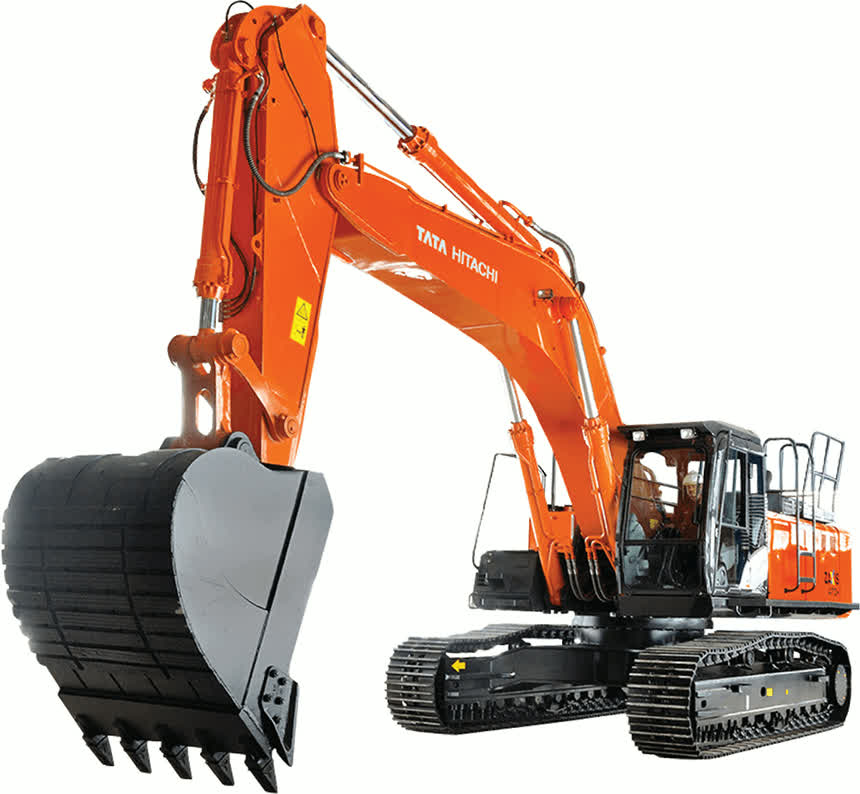

Refurbished Hitachi Zaxis 480 Excavator
The Hitachi Zaxis 480 Excavator is a high-performance, heavy-duty machine designed for large-scale construction and excavation projects. Known for its powerful engine, advanced hydraulic systems, and exceptional fuel efficiency, the Zaxis 480 is ideal for heavy lifting, digging, trenching, and material handling tasks. A refurbished Hitachi Zaxis 480 provides the same exceptional capabilities as a new machine but at a much lower cost, making it a smart investment for contractors and businesses looking to maximize their equipment budget while ensuring reliability and long-term performance.
Honestly, it's almost impossible to buy a brand new excavator from China. They either don't exist or are made in China. If a Chinese seller tells you their Caterpillar/Komatsu/Volvo/Kobelco/Hitachi is brand new, they're lying. Therefore, a refurbished excavator is your best bet.

Here are the detailed specifications for a refurbished Hitachi Zaxis 480 excavator (typically ZX480MTH or ZX480MT), ideal for your technical documentation and comparative spec work:
Operating Weight and Dimensions
- Operating Weight: ~48,000–48,500 kg
- Transport Length: ~11.8 meters (38 ft 9 in)
- Transport Width: ~3.75 meters (12 ft 4 in)
- Transport Height: ~3.5 meters (11 ft 6 in)
- Tail Swing Radius: ~3.8–4.0 meters
- Track Width: 600–800 mm standard
- Undercarriage: Heavy-duty, reinforced for quarry and mining applications
Engine and Powertrain
- Engine Model: Isuzu AH-6WG1X (Tier 2 or Tier 3 depending on build year)
- Rated Power Output: ~345–360 kW (463–483 hp) @ 1,800 rpm
- Fuel Tank Capacity: ~650–700 liters
- Travel Speed: 3.0–5.0 km/h
- Swing Speed: ~9.0 rpm
- Drive Type: Hydrostatic with planetary final drives
Hydraulic System
- Main Pump Type: 2 × axial piston pumps with HIOS IIIB hydraulic system
- Flow Rate: ~2 × 360–380 L/min
- System Pressure: Up to 34.3 MPa
- Hydraulic Oil Capacity: ~500–550 liters
- Efficiency Features:
- Boom regenerative circuit
- Variable orifice swing circuit
- Level luffing and crowding control
Performance Metrics
- Bucket Capacity: 2.1–2.5 m³ (SAE heaped)
- Max Digging Depth: ~7.5–8.0 meters
- Max Reach (Horizontal): ~12.0–12.5 meters
- Max Dump Height: ~7.5–8.0 meters
- Bucket Digging Force: ~280–300 kN
- Arm Digging Force: ~210–230 kN
Cab and Operator Features
- Cab Type: ROPS/FOPS certified with reinforced structure
- Display: LCD monitor with diagnostics and fuel tracking
- Controls: Pilot-operated joysticks with auxiliary hydraulic circuit
- Comfort: Adjustable air-suspension seat, HVAC, low-noise cab
- Visibility: Wide glass area, rear-view camera, LED work lights
Smart Features and Efficiency
- Fuel Efficiency:
- HIOS IIIB hydraulic system
- Auto idle and engine shutdown
- Emissions Control:
- Tier 2 or Tier 3 compliant (no DPF/SCR)
- Durability Enhancements:
- Reinforced boom-end plate
- Arm-end boss and cylinder mount strengthening
- Quarry-grade protection plates
Attachments Compatibility
- Standard Bucket: 2.1–2.5 m³
- Optional Tools: Rock breaker, demolition shear, ripper, compactor
- Quick Coupler: Heavy-duty hydraulic coupler
Refurbishment Scope
Refurbished ZX480 units typically include:
- Engine Overhaul: Turbocharger, injectors, cooling system
- Hydraulic Restoration: Pump recalibration, valve block testing, hose replacement
- Electrical Diagnostics: Monitor, sensors, wiring harness
- Cab Reconditioning: Seat, joysticks, HVAC, repainting
- Structural Repairs: Boom/bucket welding, bushing replacement, undercarriage rebuild
Overview of the Hitachi Zaxis 480 Excavator
The Hitachi Zaxis 480 is a large, tracked hydraulic excavator that is built to tackle the toughest tasks on large-scale construction sites. Whether it’s heavy digging, lifting, or material handling, the Zaxis 480 is equipped to handle it all with power, precision, and efficiency. The machine’s large size allows for superior reach and digging depth, while its advanced hydraulics ensure smooth and powerful operation.
A refurbished Zaxis 480 undergoes a comprehensive reconditioning process, where worn components are replaced with genuine Hitachi parts. This process ensures that the machine operates like new, providing exceptional performance at a more affordable price. Refurbished models are thoroughly inspected and brought back to factory specifications, offering the same reliability as new units.
Key Specifications of the Hitachi Zaxis 480 Excavator
The Hitachi Zaxis 480 is designed for high productivity and versatility. Here are the key specifications that make it an ideal choice for demanding jobs:
-
Operating Weight: Approximately 48,000 - 50,000 kg (105,000 - 110,000 lbs)
-
Engine Power: 350 hp (261 kW)
-
Max Digging Depth: Up to 7.5 meters (24.6 feet)
-
Maximum Reach: 11.1 meters (36.4 feet)
-
Bucket Capacity: Typically 1.2 - 2.0 cubic meters (42 - 70 cubic feet)
-
Fuel Tank Capacity: 500 - 600 liters (132 - 158 gallons)
-
Travel Speed: Up to 5.3 km/h (3.3 mph)
These specifications allow the Hitachi Zaxis 480 to perform a variety of tasks, including large-scale excavation, trenching, demolition, and material handling. The powerful engine and advanced hydraulics ensure smooth operation and the ability to handle demanding workloads.
Performance and Efficiency of the Zaxis 480
The Hitachi Zaxis 480 is designed to deliver exceptional performance while maximizing fuel efficiency. Its advanced hydraulic system and fuel-efficient engine allow it to work longer hours on a single tank of fuel, making it a cost-effective choice for businesses looking to reduce operational costs.
Performance Highlights:
-
Powerful Hydraulics: The Zaxis 480 is equipped with a highly efficient hydraulic system that delivers smooth, responsive control over the boom, arm, and bucket. This system allows for quick cycle times and increased productivity, especially when handling tough materials or working on heavy-duty tasks.
-
Fuel Efficiency: The Zaxis 480 features a fuel-efficient engine that reduces fuel consumption without sacrificing performance. The engine is designed to optimize fuel use, ensuring that the machine can run for long periods on a single tank, resulting in lower operational costs for the owner.
-
Heavy Lifting and Digging Power: With a robust engine and powerful hydraulics, the Zaxis 480 is designed for large-scale digging and lifting tasks. Its impressive digging depth and reach make it ideal for deep trenching, foundation work, and material handling in large-scale construction projects.
-
Precision and Control: The Zaxis 480 provides operators with excellent precision and control, ensuring that even delicate tasks can be carried out with accuracy. The intuitive controls and smooth operation allow the operator to maneuver the excavator in tight spaces or perform precise digging and lifting tasks with ease.
Durability and Longevity of the Zaxis 480
Hitachi equipment is known for its durability and reliability, and the Zaxis 480 is built to withstand the most demanding conditions. Designed with high-quality components and a robust frame, this excavator is engineered for long-term performance, reducing the likelihood of downtime and repairs.
Durability Features:
-
Reinforced Undercarriage: The undercarriage of the Zaxis 480 is built to handle heavy-duty tasks and rough terrain. The tracks, rollers, and sprockets are designed for durability, ensuring smooth and stable operation even in challenging environments.
-
Long-Lasting Engine: The Zaxis 480 is powered by a reliable, high-performance engine that can handle large workloads. With proper maintenance, the engine can provide thousands of hours of service, making the machine a long-term investment for any construction or excavation project.
-
Hydraulic System Durability: The hydraulic components in the Zaxis 480 are designed to withstand high pressures and frequent use. These components are built for long-lasting performance, ensuring minimal downtime and reduced risk of hydraulic failures.
Comfort and Safety of the Zaxis 480
Operator comfort and safety are essential in the design of the Hitachi Zaxis 480. The excavator is equipped with an ergonomic cabin, advanced visibility features, and a range of safety enhancements to ensure that the operator is both comfortable and secure during long shifts.
Comfort and Safety Features:
-
Spacious Cabin: The Zaxis 480 offers a spacious and comfortable operator cabin with adjustable seating, clear visibility, and user-friendly controls. The ergonomic design reduces operator fatigue, ensuring that workers can stay productive during long working hours.
-
Noise and Vibration Reduction: The cabin is designed to minimize noise and vibration, creating a more comfortable environment for the operator. This feature is especially beneficial when working on long projects or in noisy environments.
-
Safety Features: The Zaxis 480 is equipped with several safety features, including Roll Over Protection (ROPS) and Falling Object Protection (FOPS), to safeguard the operator in hazardous work conditions. The machine’s stable design and low center of gravity also enhance its safety on uneven terrain.
Versatility and Attachments for the Zaxis 480
The Hitachi Zaxis 480 is a highly versatile machine that can be equipped with a variety of attachments to tackle different tasks. From digging and lifting to demolition and material handling, the Zaxis 480 can be fitted with the right tools for any job.
Common Attachments for the Zaxis 480:
-
Buckets: The Zaxis 480 can be equipped with general-purpose, heavy-duty, or grading buckets, depending on the task. Bucket capacities typically range from 1.2 to 2.0 cubic meters (42 - 70 cubic feet), making it suitable for a wide range of material handling and digging applications.
-
Hydraulic Breakers: For demolition work, the Zaxis 480 can be fitted with hydraulic breakers that can break through concrete, rock, and other tough materials with ease.
-
Augers: The Zaxis 480 can be fitted with auger attachments for digging precise, deep holes. These attachments are ideal for applications such as foundation work, pole installations, and other tasks requiring deep, narrow holes.
-
Grapples: For handling heavy materials, the Zaxis 480 can be equipped with grapple attachments to lift and transport logs, scrap metal, or debris.
-
Quick Couplers: Quick couplers make it easy for operators to switch between attachments quickly, minimizing downtime and maximizing productivity.
Benefits of Purchasing a Refurbished Hitachi Zaxis 480 Excavator
Purchasing a refurbished Hitachi Zaxis 480 offers several advantages over buying a new machine, especially for businesses looking to maximize their equipment budget.
Key Benefits:
-
Cost Savings: Refurbished Zaxis 480 excavators are significantly more affordable than new models, providing a cost-effective solution without compromising on performance. Refurbishment ensures that the machine operates like new, with genuine Hitachi parts replacing worn components.
-
Thorough Inspection and Reconditioning: Each refurbished Zaxis 480 undergoes a detailed inspection and reconditioning process to ensure that it meets or exceeds original factory specifications. This process restores the machine to full working order, ensuring reliability and performance.
-
Warranty: Many refurbished Hitachi Zaxis 480 machines come with a warranty, offering buyers peace of mind that their investment is protected against potential mechanical issues.
-
Sustainability: Purchasing refurbished equipment is an environmentally responsible choice. It reduces waste and extends the life of existing machinery, helping to promote sustainability in the construction and heavy equipment industries.
Maintenance Tips for the Hitachi Zaxis 480 Excavator
To ensure the continued performance and longevity of the Hitachi Zaxis 480, regular maintenance is essential. By following a proactive maintenance routine, operators can prevent costly repairs and ensure that the machine operates efficiently.
Maintenance Recommendations:
-
Engine Maintenance: Regularly check and replace engine oil, replace air filters, and monitor coolant levels to ensure the engine is running at peak efficiency.
-
Hydraulic System: Inspect hydraulic hoses and fittings for leaks, and replace hydraulic filters as needed. Keeping the hydraulic system clean and in good working condition ensures optimal performance.
-
Undercarriage: Regularly inspect the undercarriage for signs of wear and replace damaged components such as tracks, sprockets, and rollers to maintain smooth operation.
-
Attachments: Check the condition of attachments such as buckets and grapples. Replace worn parts to maintain the effectiveness and functionality of the attachments.
Conclusion
The Hitachi Zaxis 480 Excavator is a powerful, efficient machine built to handle demanding tasks on large-scale construction and excavation projects. Purchasing a refurbished Zaxis 480 offers substantial cost savings while maintaining the same high level of performance, reliability, and durability as a new model. With regular maintenance, the Zaxis 480 can continue to serve businesses for many years, making it a smart investment for contractors and operators looking to maximize their productivity and return on investment.
Our Commitment
- 2 years / 4000 hours warranty.
- EPA certified.
- No sweatshop labor.
Contacts

- [email protected]
- Youtube Instagram Facebook
- Navigation: G206 (Sishu Bridge) in Changfeng County, Hefei City, Anhui Province, 200 meters north to the east